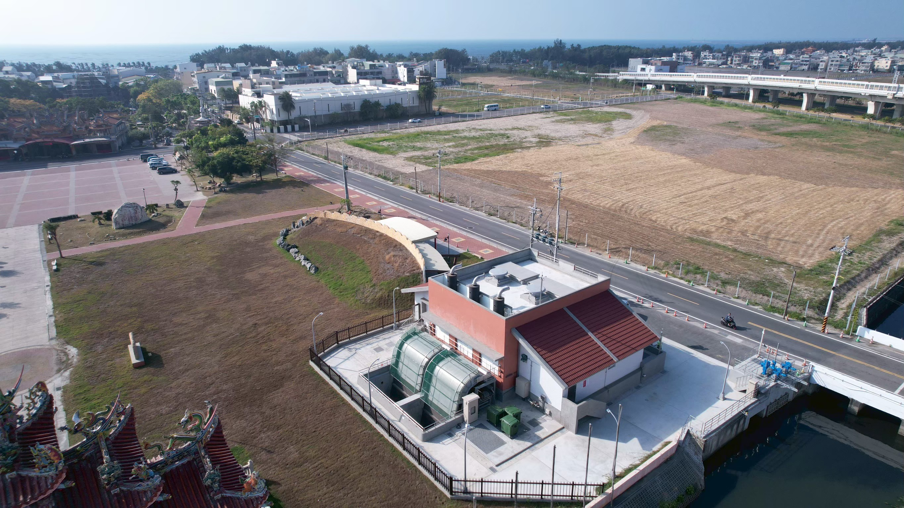

臺南市喜樹灣裡市地重劃、代辦區外灣1滯洪池及抽水站工程
市地重劃與水利工程
- 工程名稱
- 臺南市喜樹灣裡市地重劃、代辦區外灣1滯洪池及抽水站工程
- 工程類型
- 市地重劃與水利工程
- 工程地點
- 臺南市
工程介紹
本工程位於臺南市南區，整合喜樹灣裡市地重劃與區外灣1滯洪池、抽水站建設，於2025年9月底完工，並於同年12月30日舉行啟用典禮。重劃區面積29.59公頃，其中道路、公園綠地及停車場等公共設施用地共11.49公頃，完善地區交通與生活環境。
因應開發後排水及周邊聚落防洪需求，重劃工程於喜樹、灣裡地區設置四座地下滯洪池及抽水站，總滯洪量約11,800立方公尺。位於萬年殿北殿旁的灣裡1滯洪池及抽水站，與區域既有排水設施共同提升防洪能力，兼顧土地開發與治水需求。
工程影像紀錄


